▦
Dosyalar ve arşivler
Zip, 7z, rar, tekrar eden dosyalar ve büyük dosyalar; hepsi tek dosya yöneticisinde.
Windows 95'ten 11'e, sade bir Android görünümünden AMOLED karanlığına kadar her şeyi yeniden tasarlayan bütünleşik bir araç seti.
Windows 95'in nostaljisinden Windows 11'in cam yüzeylerine; Material ve AMOLED'un sade çizgilerine kadar arayüzün her ekranla birlikte değişir.
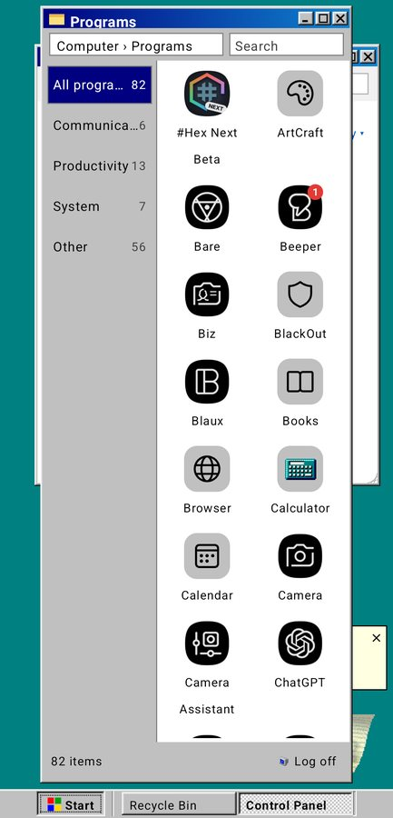
Sürükleyebileceğin, büyütebileceğin, küçültebileceğin ve yarıya bölerek dizebileceğin pencere deneyimi. Pulse artık Android ekranında gerçek bir masaüstü hissi verir.
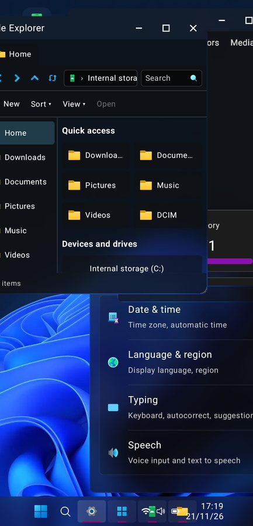
CPU çekirdeklerinden pil sıcaklığına, süreçlerden depolama kullanımına kadar telefonunun canlı durumunu açık, hızlı ve ayrıntılı ekranlarda takip et.
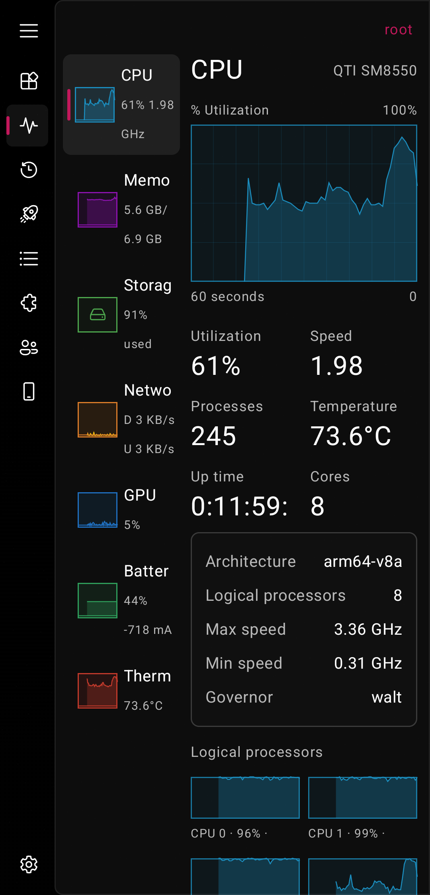
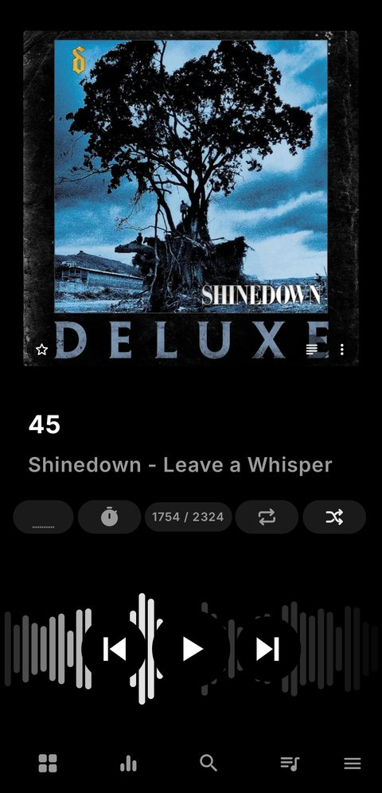
Müzik · Winamp, WMP ve Poweramp görünümü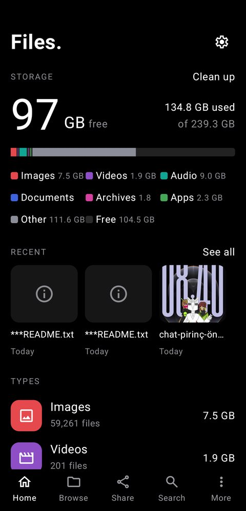
Dosya yöneticisi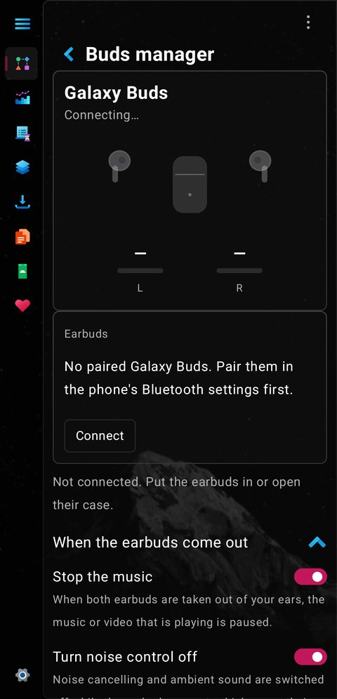
Galaxy Buds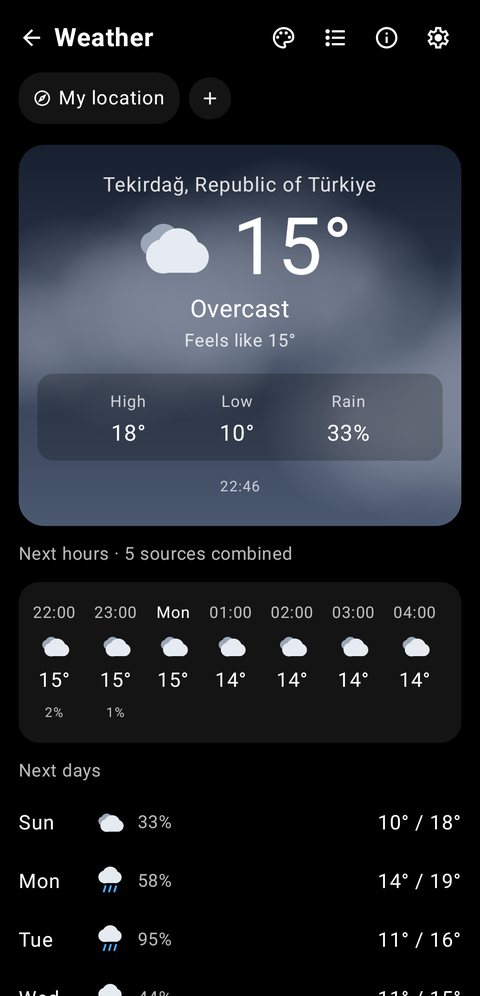
Hava, ay ve güneş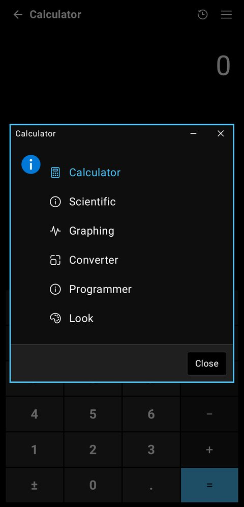
Bilimsel hesap makinesi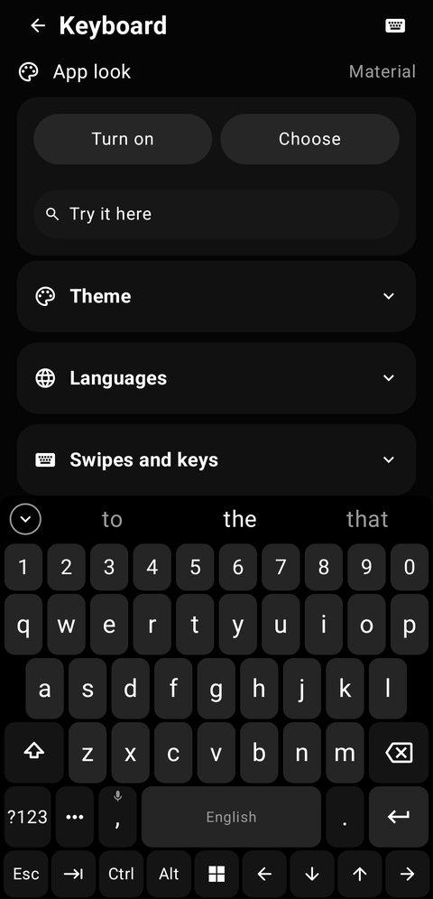
Pulse klavye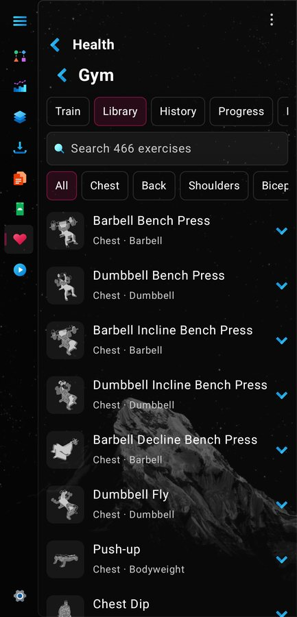
Sağlık ve egzersizBuds pil durumunu, gürültü kontrolünü ve kulak içi durumunu takip et. Kablosuz hata ayıklama üzerinden Wear OS saatine uygulama gönder, ekran görüntüsü al ve shell aç.
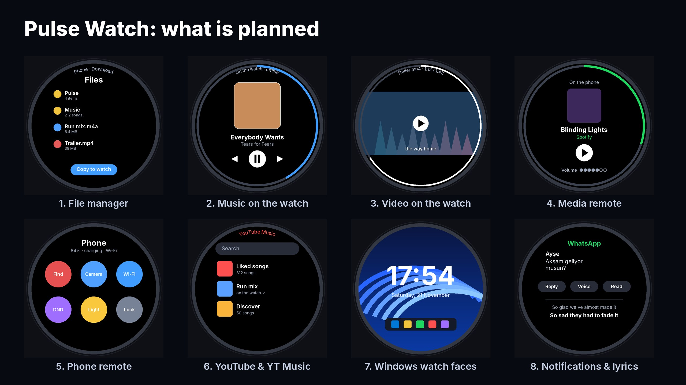
3D kutu rafı, CD rafı veya klasik ızgara görünümüyle oyunlarını düzenle. Satranç, dama ve Power of 4'ü tek telefonda, yapay zekaya veya Bluetooth üzerinden arkadaşına karşı oynayabilirsin.
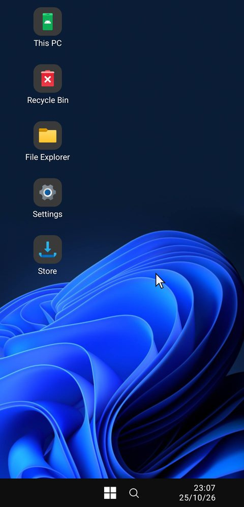
Zip, 7z, rar, tekrar eden dosyalar ve büyük dosyalar; hepsi tek dosya yöneticisinde.
20'den fazla canlı widget: görevler, saatler, hava, performans ve Windows klasikleri.
Emoji, pano geçmişi, çeviri, Tema paketleri ve şifre yönetimi.
Şehirler, uydu uyumlu tahminler, ay evresi, güneş arcı ve hava uyarıları.
Adımlar, antrenmanlar, kamera ile nabız, egzersiz planları ve özetler.
Uygulama kilidi, özel şifre kasası, TOTP kodları ve yerel çalışma.
Yerel oynatıcı, çevrim içi altyazı arama, resim içinde resim ve intro atlama.
Saatler, şarj animasyonları, masaüstü dashboard ve AMOLED yüzler.
Cihazdaki modellerle sohbet, dosya ve uygulama model seçimleri; bulut zorunlu değil.